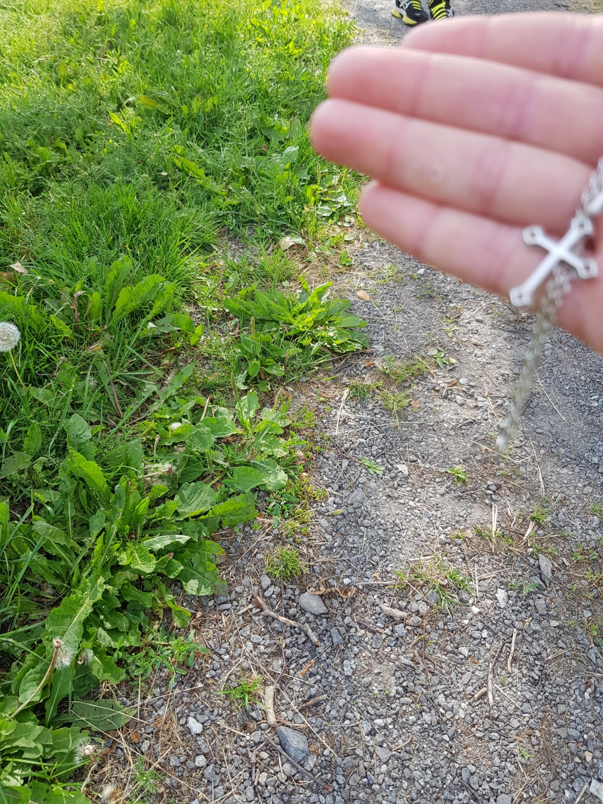
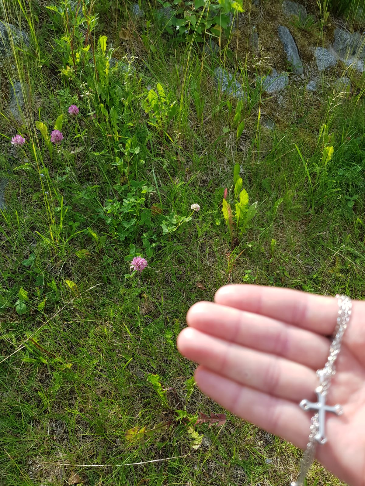

Oskun Kasvio
Oskun kasvio 2021
Klikkaa kuvaa, jos haluat nahda kuvan isompana.
Voit vaihdella sivuja alhaalla olevasta valikosta.
Koiranputki (Anthriscus sylvestris)
Kirjurinluoto, Pori
Ranta
Valkoapila (Trifolium repens)
Pori
Tien Pientare

Piharatamo (Plantago major)
Kirjurinluoto, Pori
Tien Pientare
Ahopäivänkakkara (Leucanthemum vulgare)
Kirjurinluoto, Pori
Tien Pientare
Isolumme (Nymphaea alba)
Vaskuu, Virrat
Järvi
Ulpukka (Nuphar lutea)
Vaskuu, Virrat
Järvi
Saniainen (Pteridophytina)
Mäntyluoto, Pori
Kallio

Puna-apila (Trifolium pratense)
Reposaari, Pori
Tien Pientare
1
2
3
4